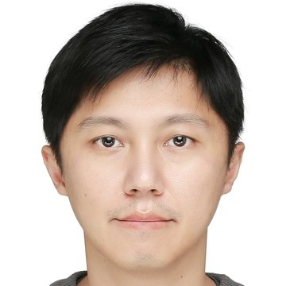
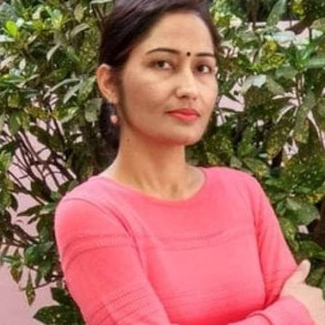
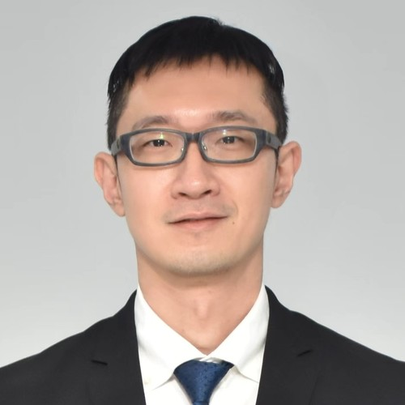

Chien-Ming Chen
Nanjing University of Information Science and Technology
ChinaMeet the confirmed conference leadership. Additional committee appointments will be announced as they are confirmed.

Nanjing University of Information Science and Technology
ChinaNational Ilan University
Taiwan
Chaudhary Charan Singh University
India
Universiti Malaya
MalaysiaMarwadi University
IndiaNanjing University of Information Science and Technology
ChinaConfirmed Technical Program Committee members are listed below.
Abu Dhabi University, United Arab Emirates
University of California, USA
Universiti Tunku Abdul Rahman, Malaysia
Universidad Internacional de La Rioja, Spain
Boise State University, USA
University of Sousse, Tunisia
Istanbul Gelisim University, Turkey
Galgotias College of Engineering and Technology, India
Swinburne University of Technology, Australia
VSB – Technical University of Ostrava, Czech Republic
National Taiwan Ocean University, Taiwan
University of Electronic Science and Technology of China, China
National Yang Ming Chiao Tung University, Taiwan